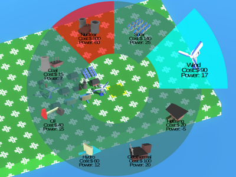

Projects
-

PiUI
PiUI is a radial menu creation tool for the Unity Engine. It enables easy creation of screenspace radial menus. Users can choose to make menus either dynamically, or manually in editor.
-

Controller Manager
Unity's out of the box controller support is terrible. Unity Controller Manager makes it easy to add 1-4 xInput controllers to any project. After adding the inputs using either provided C# applications, simply use the new Controller namespace like Unity's Input namespace. Quick and easy to use.